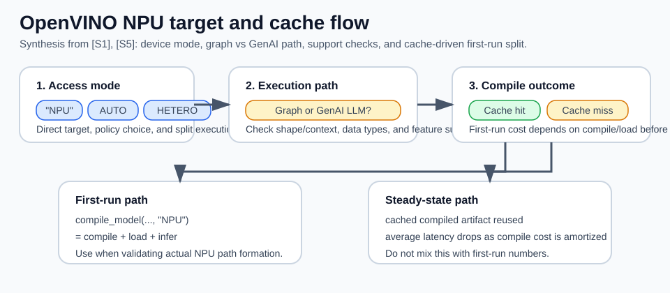
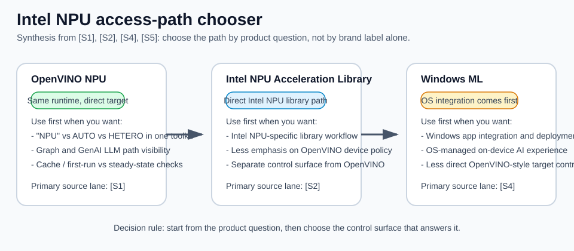

OpenVINO NPU
수업 개요
이 챕터의 중심 질문은 단순하다. OpenVINO에서 NPU를 쓰려면 실제로 무엇을 호출하고, 일반 그래프 실행과 LLM 전용 GenAI 파이프라인의 제약을 어떻게 구분하며, 왜 첫 실행과 재실행 체감이 달라지는가다. 일반 Runtime 경로에서는 compile_model(..., "NPU"), AUTO와 HETERO, 지원 dtype과 기능 범위를 확인한다 [S1][S1] NPU device핵심 근거OpenVINOcompile model(..., "NPU") , AUTO / HETERO , 일반 graph의 지원 범위와 caching 설명. LLM은 여기에 ov_genai.LLMPipeline(..., "NPU"), prompt 길이, prefill mode, caching과 AoT compilation이라는 별도 조건이 붙는다 [S5][S5] OpenVINO GenAI on NPU핵심 근거OpenVINOLLMPipeline , 2025.3 이후 dynamic prompt, context budget, performance hint, caching과 AoT 설명.
그래서 이 챕터의 tradeoff인 기기 접근성과 backend 제약은 추상 명사가 아니다. 일반 모델은 NPU plugin이 받을 수 있는 shape, dtype, 연산과 실행 모드를 확인해야 하고 [S1][S1] NPU device핵심 근거OpenVINOcompile model(..., "NPU") , AUTO / HETERO , 일반 graph의 지원 범위와 caching 설명, LLM은 모델 준비 방식과 context budget까지 맞춰야 한다 [S5][S5] OpenVINO GenAI on NPU핵심 근거OpenVINOLLMPipeline , 2025.3 이후 dynamic prompt, context budget, performance hint, caching과 AoT 설명. 다만 이를 "NPU는 동적 입력을 받지 못한다"로 요약하면 최신 동작을 놓친다. OpenVINO 2025.3부터 GenAI NPU LLM pipeline은 동적 prompt 실행을 지원하며 PREFILL_HINT=DYNAMIC이 기본값이다 [S5][S5] OpenVINO GenAI on NPU핵심 근거OpenVINOLLMPipeline , 2025.3 이후 dynamic prompt, context budget, performance hint, caching과 AoT 설명. 이는 임의의 모델과 무제한 길이를 보장한다는 뜻이 아니라, LLM pipeline이 MAX_PROMPT_LEN, MIN_RESPONSE_LEN, prefill chunk 안에서 가변 prompt를 처리한다는 뜻이다 [S5][S5] OpenVINO GenAI on NPU핵심 근거OpenVINOLLMPipeline , 2025.3 이후 dynamic prompt, context budget, performance hint, caching과 AoT 설명.
학습 목표
compile_model(..., "NPU"),AUTO,HETERO의 차이를 설명할 수 있다 [S1][S1] NPU device핵심 근거OpenVINOcompile model(..., "NPU") , AUTO / HETERO , 일반 graph의 지원 범위와 caching 설명.- 일반 OpenVINO graph 경로의 shape 제약과 GenAI NPU LLM pipeline의 dynamic prompt mode를 구분할 수 있다 [S1][S1] NPU device핵심 근거OpenVINOcompile model(..., "NPU") , AUTO / HETERO , 일반 graph의 지원 범위와 caching 설명[S5][S5] OpenVINO GenAI on NPU핵심 근거OpenVINOLLMPipeline , 2025.3 이후 dynamic prompt, context budget, performance hint, caching과 AoT 설명.
- 첫 실행 지연을 steady-state 성능과 분리해 FEIL/FIL, model caching 관점으로 해석할 수 있다 [S1][S1] NPU device핵심 근거OpenVINOcompile model(..., "NPU") , AUTO / HETERO , 일반 graph의 지원 범위와 caching 설명.
- supported data types와 feature support 제한이 왜 CPU/GPU 대안을 다시 열어 두게 만드는지 설명할 수 있다 [S1][S1] NPU device핵심 근거OpenVINOcompile model(..., "NPU") , AUTO / HETERO , 일반 graph의 지원 범위와 caching 설명.
- OpenVINO NPU, Intel NPU Acceleration Library, Windows ML이 서로 다른 제어면이라는 점을 구분할 수 있다 [S1][S1] NPU device핵심 근거OpenVINOcompile model(..., "NPU") , AUTO / HETERO , 일반 graph의 지원 범위와 caching 설명[S2][S2] Intel NPU Acceleration Library핵심 근거IntelOpenVINO와 구분되는 Intel NPU 활용 라이브러리 경로 설명[S4][S4] Windows ML overview핵심 근거Microsoft LearnWindows ML을 OS 통합 런타임 계층으로 설명.
수업 전에 생각할 질문
device="NPU"를 줬는데 긴 prompt에서 실패하면, 일반 graph 경로인지 GenAI LLM pipeline인지부터 구분할 수 있는가?- 첫 요청만 유독 느리고 두 번째부터 빨라지면, operator 최적화 문제라고 바로 결론내려도 될까?
AUTO가 있으니 굳이"NPU"를 직접 지정할 필요가 없다고 말해도 될까?
강의 스크립트
장면 1. NPU를 지정한다는 말의 정확한 뜻
교수자: OpenVINO에서 NPU를 쓴다는 말은 먼저 호출 수준에서 분명해야 합니다. 가장 직접적인 형태는 compile_model(model, "NPU")입니다. 이건 "가능하면 NPU를 써 줘"가 아니라, 이 모델을 NPU 타깃으로 컴파일하겠다는 명시적 요청입니다 [S1][S1] NPU device핵심 근거OpenVINOcompile model(..., "NPU") , AUTO / HETERO , 일반 graph의 지원 범위와 caching 설명.
학습자: 그러면 AUTO도 결국 NPU를 골라 줄 수 있으니 같은 뜻 아닌가요?
교수자: 아닙니다. AUTO는 장치 선택 정책이고, "NPU"는 장치 고정입니다. HETERO는 더 다릅니다. 여러 장치에 graph를 나눠 싣는 방식입니다. 그래서 "NPU"로 성공한 경로와 AUTO 또는 HETERO로 성공한 경로를 같은 실험으로 취급하면 안 됩니다 [S1][S1] NPU device핵심 근거OpenVINOcompile model(..., "NPU") , AUTO / HETERO , 일반 graph의 지원 범위와 caching 설명.
import openvino as ov
core = ov.Core()
compiled_npu = core.compile_model(model, "NPU")
compiled_auto = core.compile_model(model, "AUTO")
compiled_hetero = core.compile_model(model, "HETERO:NPU,CPU")| 지정 방식 | 뜻 | 바로 떠올릴 질문 | 흔한 오해 |
|---|---|---|---|
compile_model(..., "NPU") | NPU에 명시적으로 고정한다 [S1][S1] NPU device핵심 근거OpenVINOcompile model(..., "NPU") , AUTO / HETERO , 일반 graph의 지원 범위와 caching 설명 | 이 모델이 NPU 제약을 통과하는가? | AUTO와 사실상 같다고 본다 |
compile_model(..., "AUTO") | OpenVINO가 장치를 선택한다 [S1][S1] NPU device핵심 근거OpenVINOcompile model(..., "NPU") , AUTO / HETERO , 일반 graph의 지원 범위와 caching 설명 | 실제로 어느 장치가 선택됐는가? | 항상 NPU 우선이라고 믿는다 |
compile_model(..., "HETERO:NPU,CPU") | 장치 간 분할 실행을 시도한다 [S1][S1] NPU device핵심 근거OpenVINOcompile model(..., "NPU") , AUTO / HETERO , 일반 graph의 지원 범위와 caching 설명 | 분할 지원 범위가 충분한가? | unsupported feature도 자동으로 깔끔하게 해결된다고 본다 |
flowchart TD
A["모델 준비"] --> B{"무엇을 원하나?"}
B --> C["NPU에 고정<br/>compile_model(..., 'NPU')"]
B --> D["장치 자동 선택<br/>compile_model(..., 'AUTO')"]
B --> E["장치 분할 실행<br/>compile_model(..., 'HETERO:NPU,CPU')"]
C --> F["NPU 제약을 직접 통과해야 함"]
D --> G["선택 결과와 이유를 확인"]
E --> H["분할 지원 범위와 경계 비용 확인"]장면 2. OpenVINO NPU의 제약은 무엇으로 드러나는가
학습자: 그러면 backend 제약이라는 말은 정확히 뭘 뜻하나요?
교수자: 먼저 API 층을 나눠야 합니다. 일반 Runtime graph를 NPU에 compile할 때는 모델 shape, supported data types, feature support, 그리고 AUTO나 HETERO의 실제 지원 범위를 확인합니다 [S1][S1] NPU device핵심 근거OpenVINOcompile model(..., "NPU") , AUTO / HETERO , 일반 graph의 지원 범위와 caching 설명. 반면 OpenVINO GenAI의 NPU LLM pipeline은 2025.3부터 dynamic input prompt를 지원합니다. 기본 PREFILL_HINT는 DYNAMIC이고, 고정 prompt 크기에서 성능을 우선할 때 명시적으로 STATIC을 선택할 수 있습니다 [S5][S5] OpenVINO GenAI on NPU핵심 근거OpenVINOLLMPipeline , 2025.3 이후 dynamic prompt, context budget, performance hint, caching과 AoT 설명.
학습자: 결국 "NPU"를 줬다는 사실이 성공 조건의 절반도 안 되는군요.
교수자: 맞습니다. 이 챕터에서의 NPU 성공은 문자열을 넣었다가 아니라 API 층, 모델 artifact, shape와 context budget, dtype, feature support, 실행 모드를 함께 맞췄다는 뜻입니다 [S1][S1] NPU device핵심 근거OpenVINOcompile model(..., "NPU") , AUTO / HETERO , 일반 graph의 지원 범위와 caching 설명[S5][S5] OpenVINO GenAI on NPU핵심 근거OpenVINOLLMPipeline , 2025.3 이후 dynamic prompt, context budget, performance hint, caching과 AoT 설명.
식 1. 첫 실행이 느린 이유를 분해하는 식
OpenVINO NPU 문서가 FEIL/FIL과 model caching을 따로 설명한다는 사실을 바탕으로, 이 장은 첫 요청 비용을 steady-state와 분리해 읽는 운영 판단식을 쓴다 [합성] [S1][S1] NPU device핵심 근거OpenVINOcompile model(..., "NPU") , AUTO / HETERO , 일반 graph의 지원 범위와 caching 설명.
교수자: 첫 실행은 추론만 하는 시간이 아닙니다. NPU용 compile과 load가 앞에 붙습니다. 그래서 첫 요청이 느릴 때는 연산량보다 compile 경로를 먼저 의심해야 합니다 [S1][S1] NPU device핵심 근거OpenVINOcompile model(..., "NPU") , AUTO / HETERO , 일반 graph의 지원 범위와 caching 설명.
학습자: 그러면 FEIL/FIL은 이 첫 구간을 따로 보는 실무용 단서라고 이해하면 되나요?
교수자: 이 챕터에서는 그 정도로 이해하면 충분합니다. FEIL/FIL은 first-execution init latency, first-inference latency처럼 첫 실행 계열 지표를 가리키는 실무 단서로 읽으면 됩니다. S1이 그 지표와 caching을 같이 설명하고, 우리는 그 관계를 학습용 판단식으로 정리한 것입니다 [합성] [S1][S1] NPU device핵심 근거OpenVINOcompile model(..., "NPU") , AUTO / HETERO , 일반 graph의 지원 범위와 caching 설명.
장면 3. cache가 체감을 바꾸는 방식
교수자: model caching은 이 챕터에서 반드시 기억해야 할 OpenVINO 고유 포인트입니다. 동일한 compilation request가 반복되면 첫 실행에서 만든 결과를 재사용해, 다시 compile하는 비용을 줄일 수 있습니다 [S1][S1] NPU device핵심 근거OpenVINOcompile model(..., "NPU") , AUTO / HETERO , 일반 graph의 지원 범위와 caching 설명.
학습자: 그러면 벤치마크를 한 번만 재고 결론내리면 안 되겠네요.
교수자: 그렇습니다. 첫 실행의 FEIL/FIL 성격과 재실행의 steady-state를 섞으면 모델 선택도, 장치 선택도 잘못됩니다 [S1][S1] NPU device핵심 근거OpenVINOcompile model(..., "NPU") , AUTO / HETERO , 일반 graph의 지원 범위와 caching 설명.
sequenceDiagram
participant App as 애플리케이션
participant OV as OpenVINO Core
participant NPU as NPU plugin
App->>OV: compile_model(model, "NPU")
OV->>NPU: NPU용 compile 요청
NPU-->>OV: cache miss 또는 cache hit <sup class='citation-ref'>[S1]</sup>
OV-->>App: compiled model 반환
App->>OV: infer
OV->>NPU: 실행
NPU-->>OV: 결과 반환식 2. 반복 요청에서 평균 체감이 바뀌는 학습용 식
교수자: 반복 요청 수 N이 커질수록 첫 compile 비용은 평균에서 희석됩니다. 이 식 자체는 S1의 직접 공식이 아니라, S1이 설명하는 caching과 first-run 분리를 운영 관점에서 묶어 쓴 학습용 평균식입니다 [합성] [S1][S1] NPU device핵심 근거OpenVINOcompile model(..., "NPU") , AUTO / HETERO , 일반 graph의 지원 범위와 caching 설명. 그래서 임베딩처럼 같은 shape의 요청이 계속 들어오는 워크로드는 cache 효과를 체감하기 쉽고, 반대로 실행 패턴이 불안정하면 첫 요청 비용이 계속 눈에 띌 수 있습니다.
장면 4. 사례 1, 긴 prompt 실패를 잘못 진단한다
학습자: 실수 장면을 하나 들어 주세요.
교수자: 팀이 로컬 챗 UI에서 짧은 prompt는 처리하지만 긴 대화 기록에서 실패한다고 합시다. 이를 곧바로 "dynamic shape라서 NPU 불가"라고 진단하면 최신 GenAI 경로를 놓칩니다. 먼저 일반 compile_model graph인지 ov_genai.LLMPipeline인지 구분해야 합니다. 후자라면 2025.3 이후 기본 DYNAMIC prefill을 지원합니다 [S5][S5] OpenVINO GenAI on NPU핵심 근거OpenVINOLLMPipeline , 2025.3 이후 dynamic prompt, context budget, performance hint, caching과 AoT 설명.
학습자: 그럼 여기서 "NPU가 느리다"가 아니라 "NPU 경로가 성립하지 않는다"가 먼저네요.
교수자: 정확합니다. 이 장면의 디버깅 순서는 1) Runtime graph와 GenAI LLM pipeline 구분, 2) NPU용으로 올바르게 준비된 모델인지 확인, 3) MAX_PROMPT_LEN과 MIN_RESPONSE_LEN의 합으로 정해지는 context budget 확인, 4) prefill chunk와 PREFILL_HINT 확인, 5) unsupported dtype·연산·shape 확인, 6) 필요하면 CPU/GPU 대안 비교입니다 [S1][S1] NPU device핵심 근거OpenVINOcompile model(..., "NPU") , AUTO / HETERO , 일반 graph의 지원 범위와 caching 설명[S5][S5] OpenVINO GenAI on NPU핵심 근거OpenVINOLLMPipeline , 2025.3 이후 dynamic prompt, context budget, performance hint, caching과 AoT 설명. DYNAMIC은 prompt 길이 변화에 대응하는 pipeline mode이지 임의의 shape와 무한 context를 허용하는 면허가 아닙니다 [S5][S5] OpenVINO GenAI on NPU핵심 근거OpenVINOLLMPipeline , 2025.3 이후 dynamic prompt, context budget, performance hint, caching과 AoT 설명[합성].
장면 5. 사례 2, cache 때문에 첫 실행과 재실행 체감이 다르다
교수자: 이번에는 성공 장면을 보겠습니다. 같은 IR을 주기적으로 올리는 문서 임베딩 서비스가 있다고 합시다. 첫 배포 직후에는 요청 하나가 유난히 느립니다. 그런데 같은 shape의 요청이 반복되면 다음부터는 훨씬 안정적으로 보입니다. 이때는 연산이 갑자기 빨라진 게 아니라, initial compile 성격과 cache 재사용 효과를 분리해서 봐야 합니다 [S1][S1] NPU device핵심 근거OpenVINOcompile model(..., "NPU") , AUTO / HETERO , 일반 graph의 지원 범위와 caching 설명.
학습자: 그러면 "첫 요청만 느리다"는 건 실패가 아니라 측정 설계 문제일 수도 있겠네요.
교수자: 그렇습니다. S1이 FEIL/FIL과 model caching을 함께 두는 이유가 바로 그겁니다. 첫 요청 지연을 steady-state 숫자와 분리하지 않으면, NPU 자체를 과소평가하거나 과대평가하게 됩니다 [S1][S1] NPU device핵심 근거OpenVINOcompile model(..., "NPU") , AUTO / HETERO , 일반 graph의 지원 범위와 caching 설명.
장면 6. OpenVINO 고유 판단과 제품 해석을 연결하기
학습자: 여기까지는 OpenVINO 문서 관점이고, 제품 팀은 어떤 결론을 가져가야 하나요?
교수자: 다음처럼 바로 옮기면 됩니다.
| 제품 질문 | OpenVINO 문서에서 먼저 볼 것 | 해석 |
|---|---|---|
| "NPU를 강제로 쓰고 싶은가?" | "NPU" 직접 지정 [S1][S1] NPU device핵심 근거OpenVINOcompile model(..., "NPU") , AUTO / HETERO , 일반 graph의 지원 범위와 caching 설명 | 실험 목적이 장치 검증이면 AUTO보다 직접 지정이 명확하다 |
| "왜 어떤 요청은 되고 어떤 요청은 안 되는가?" | API 층, 모델 준비, context budget, prompt mode, 지원 dtype과 기능 [S1][S1] NPU device핵심 근거OpenVINOcompile model(..., "NPU") , AUTO / HETERO , 일반 graph의 지원 범위와 caching 설명[S5][S5] OpenVINO GenAI on NPU핵심 근거OpenVINOLLMPipeline , 2025.3 이후 dynamic prompt, context budget, performance hint, caching과 AoT 설명 | LLM의 가변 prompt와 일반 graph의 shape 제약을 같은 문제로 뭉치지 않는다 |
| "왜 재시작 직후만 느린가?" | FEIL/FIL, model caching [S1][S1] NPU device핵심 근거OpenVINOcompile model(..., "NPU") , AUTO / HETERO , 일반 graph의 지원 범위와 caching 설명 | steady-state 최적화와 first-run 최적화를 분리한다 |
| "NPU 하나로 안 끝나면?" | AUTO, HETERO의 실제 지원 범위 [S1][S1] NPU device핵심 근거OpenVINOcompile model(..., "NPU") , AUTO / HETERO , 일반 graph의 지원 범위와 caching 설명 | CPU/GPU 혼합 경로를 열어 두되, 기대와 실제 지원 범위를 분리해서 본다 |
교수자: 제품 판단으로 옮기면 더 구체적으로 말할 수 있습니다.
교수자: 여기서 핵심은 누가 더 좋으냐가 아닙니다. OpenVINO는 Intel PC에서 NPU target을 검증하고 CPU/GPU/NPU 모드를 같은 toolkit 안에서 비교할 때 가장 자연스럽습니다 [S1][S1] NPU device핵심 근거OpenVINOcompile model(..., "NPU") , AUTO / HETERO , 일반 graph의 지원 범위와 caching 설명[합성]. Intel NPU Acceleration Library는 Intel NPU 활용을 직접 다루는 별도 라이브러리 경로이고 [S2][S2] Intel NPU Acceleration Library핵심 근거IntelOpenVINO와 구분되는 Intel NPU 활용 라이브러리 경로 설명, Windows ML은 OS 레벨 통합 경로입니다 [S4][S4] Windows ML overview핵심 근거Microsoft LearnWindows ML을 OS 통합 런타임 계층으로 설명. 따라서 정말 NPU에 고정해 되는지부터 보고 싶은 팀은 OpenVINO 쪽으로, Windows 앱 통합이 더 앞선 팀은 Windows ML 쪽으로 질문이 갈라집니다 [S1][S1] NPU device핵심 근거OpenVINOcompile model(..., "NPU") , AUTO / HETERO , 일반 graph의 지원 범위와 caching 설명[S4][S4] Windows ML overview핵심 근거Microsoft LearnWindows ML을 OS 통합 런타임 계층으로 설명[합성]. ONNX는 여전히 모델 교환 형식 계층일 뿐이라, 이 선택의 주인공이 아닙니다 [S3][S3] Open Neural Network Exchange핵심 근거ONNXONNX를 모델 교환 형식 계층으로 설명.
자주 헷갈리는 포인트
"NPU"직접 지정과AUTO는 같은 뜻이 아니다. 전자는 장치 고정이고, 후자는 장치 선택 정책이다 [S1][S1] NPU device핵심 근거OpenVINOcompile model(..., "NPU") , AUTO / HETERO , 일반 graph의 지원 범위와 caching 설명.NPU지정 실패를 곧바로 성능 문제로 해석하면 안 된다. 다만 LLM의 가변 prompt를 일반 graph의 static-shape 문제로 단정해서도 안 된다 [S1][S1] NPU device핵심 근거OpenVINOcompile model(..., "NPU") , AUTO / HETERO , 일반 graph의 지원 범위와 caching 설명[S5][S5] OpenVINO GenAI on NPU핵심 근거OpenVINOLLMPipeline , 2025.3 이후 dynamic prompt, context budget, performance hint, caching과 AoT 설명.- GenAI의
DYNAMICprompt mode는 arbitrary dynamic shape 지원이 아니다. 모델 준비, 최대 prompt와 응답 길이, chunk 크기, 지원 기능은 여전히 경계 조건이다 [S5][S5] OpenVINO GenAI on NPU핵심 근거OpenVINOLLMPipeline , 2025.3 이후 dynamic prompt, context budget, performance hint, caching과 AoT 설명[합성]. - 첫 요청 지연과 steady-state는 다른 문제다. FEIL/FIL, model caching을 따로 보지 않으면 벤치마크 해석이 틀어진다 [S1][S1] NPU device핵심 근거OpenVINOcompile model(..., "NPU") , AUTO / HETERO , 일반 graph의 지원 범위와 caching 설명.
- supported data types가 제한적이라는 사실은 "형식을 바꾸면 해결된다"가 아니라 "CPU/GPU 대안도 계속 열어 둬야 한다"는 뜻에 가깝다 [S1][S1] NPU device핵심 근거OpenVINOcompile model(..., "NPU") , AUTO / HETERO , 일반 graph의 지원 범위와 caching 설명.
- OpenVINO, Intel NPU Acceleration Library, Windows ML은 모두 Intel/Windows 문맥에서 NPU를 만질 수 있어 보여도 같은 층위가 아니다. 어떤 runtime에서 장치 제어를 하려는지 먼저 정해야 비교가 맞는다 [S1][S1] NPU device핵심 근거OpenVINOcompile model(..., "NPU") , AUTO / HETERO , 일반 graph의 지원 범위와 caching 설명[S2][S2] Intel NPU Acceleration Library핵심 근거IntelOpenVINO와 구분되는 Intel NPU 활용 라이브러리 경로 설명[S4][S4] Windows ML overview핵심 근거Microsoft LearnWindows ML을 OS 통합 런타임 계층으로 설명[합성].
사례로 다시 보기
사례 A. 로컬 챗 UI에서 NPU 지정이 바로 실패한 경우
- 현상:
compile_model(..., "NPU")를 넣었는데 특정 프롬프트 길이에서만 막힌다. - 1차 판단: 일반 Runtime graph인지 GenAI LLM pipeline인지 먼저 본다 [S1][S1] NPU device핵심 근거OpenVINOcompile model(..., "NPU") , AUTO / HETERO , 일반 graph의 지원 범위와 caching 설명[S5][S5] OpenVINO GenAI on NPU핵심 근거OpenVINOLLMPipeline , 2025.3 이후 dynamic prompt, context budget, performance hint, caching과 AoT 설명.
- 2차 판단: LLM pipeline이면 모델 준비 방식, context budget, prefill chunk,
PREFILL_HINT를 확인한다 [S5][S5] OpenVINO GenAI on NPU핵심 근거OpenVINOLLMPipeline , 2025.3 이후 dynamic prompt, context budget, performance hint, caching과 AoT 설명. 일반 graph이면 실제 unsupported shape, dtype, feature를 확인한다 [S1][S1] NPU device핵심 근거OpenVINOcompile model(..., "NPU") , AUTO / HETERO , 일반 graph의 지원 범위와 caching 설명. - 결론: 이 장면은 "NPU가 느리다"가 아니라 "NPU 경로가 성립하지 않는다"가 맞다.
사례 B. 임베딩 서비스에서 첫 배포 직후만 느린 경우
- 현상: 재시작 직후 첫 요청만 느리고, 이후 같은 요청은 안정적이다.
- 1차 판단: FEIL/FIL과 model caching 성격의 비용을 의심한다 [S1][S1] NPU device핵심 근거OpenVINOcompile model(..., "NPU") , AUTO / HETERO , 일반 graph의 지원 범위와 caching 설명.
- 2차 판단: steady-state가 안정적이면 operator 튜닝보다 compile 재사용 구조가 더 직접적인 개선 포인트일 수 있다 [S1][S1] NPU device핵심 근거OpenVINOcompile model(..., "NPU") , AUTO / HETERO , 일반 graph의 지원 범위와 caching 설명.
- 결론: 첫 요청 지연과 반복 요청 latency를 한 그래프에 섞으면 잘못된 결론이 나온다.
사례 C. 어떤 Intel NPU 접근 경로를 먼저 고를지 헷갈리는 경우
- 현상: 팀이 Intel PC용 앱을 만들고 있는데 OpenVINO, Intel NPU Acceleration Library, Windows ML 중 어디서 시작할지 정하지 못한다.
- 1차 판단: NPU target 고정,
AUTO/HETERO, GenAI LLM pipeline, cache까지 같은 toolkit에서 검증하고 싶다면 OpenVINO 질문이 먼저다 [S1][S1] NPU device핵심 근거OpenVINOcompile model(..., "NPU") , AUTO / HETERO , 일반 graph의 지원 범위와 caching 설명[S5][S5] OpenVINO GenAI on NPU핵심 근거OpenVINOLLMPipeline , 2025.3 이후 dynamic prompt, context budget, performance hint, caching과 AoT 설명[합성]. - 2차 판단: Intel NPU 활용을 직접 다루는 별도 라이브러리 경로 자체를 실험하고 싶다면 Intel NPU Acceleration Library 문서를 본다 [S2][S2] Intel NPU Acceleration Library핵심 근거IntelOpenVINO와 구분되는 Intel NPU 활용 라이브러리 경로 설명.
- 3차 판단: 앱 관점에서 Windows OS 통합 on-device AI 경로가 더 중요하면 Windows ML 문맥으로 옮긴다 [S4][S4] Windows ML overview핵심 근거Microsoft LearnWindows ML을 OS 통합 런타임 계층으로 설명[합성].
- 결론: 세 경로는 "같은 Intel NPU"를 보는 것처럼 보여도 제어면이 다르므로, 하나의 benchmark 표로 바로 섞어 비교하면 안 된다.
핵심 정리
- OpenVINO NPU의 출발점은
compile_model(..., "NPU")다. 이 한 줄이 실제 장치 타깃 지정이다 [S1][S1] NPU device핵심 근거OpenVINOcompile model(..., "NPU") , AUTO / HETERO , 일반 graph의 지원 범위와 caching 설명. - 하지만 성공 조건은 문자열이 아니라 경로별 제약 통과다. 일반 graph와 GenAI LLM pipeline을 구분하고 모델 준비, context budget, dtype, feature support를 같이 봐야 한다 [S1][S1] NPU device핵심 근거OpenVINOcompile model(..., "NPU") , AUTO / HETERO , 일반 graph의 지원 범위와 caching 설명[S5][S5] OpenVINO GenAI on NPU핵심 근거OpenVINOLLMPipeline , 2025.3 이후 dynamic prompt, context budget, performance hint, caching과 AoT 설명.
AUTO는 선택 정책이고HETERO는 분할 실행이다. 둘 다 순수"NPU"지정과 같은 실험이 아니다 [S1][S1] NPU device핵심 근거OpenVINOcompile model(..., "NPU") , AUTO / HETERO , 일반 graph의 지원 범위와 caching 설명.- 첫 실행 지연은 FEIL/FIL과 model caching으로 분리해서 봐야 한다. 재실행 체감은 compile 재사용에 크게 좌우될 수 있다 [S1][S1] NPU device핵심 근거OpenVINOcompile model(..., "NPU") , AUTO / HETERO , 일반 graph의 지원 범위와 caching 설명.
- OpenVINO는 Intel PC에서 NPU target 지정,
AUTO/HETERO비교, GenAI LLM prompt mode와 cache 검증을 한 toolkit에서 묶어 볼 때 자연스럽다 [S1][S1] NPU device핵심 근거OpenVINOcompile model(..., "NPU") , AUTO / HETERO , 일반 graph의 지원 범위와 caching 설명[S5][S5] OpenVINO GenAI on NPU핵심 근거OpenVINOLLMPipeline , 2025.3 이후 dynamic prompt, context budget, performance hint, caching과 AoT 설명[합성]. - Intel NPU Acceleration Library [S2][S2] Intel NPU Acceleration Library핵심 근거IntelOpenVINO와 구분되는 Intel NPU 활용 라이브러리 경로 설명, ONNX [S3][S3] Open Neural Network Exchange핵심 근거ONNXONNX를 모델 교환 형식 계층으로 설명, Windows ML [S4][S4] Windows ML overview핵심 근거Microsoft LearnWindows ML을 OS 통합 런타임 계층으로 설명은 각각 다른 층위다. 이 챕터의 중심은 OpenVINO NPU device 경로다.
복습 체크리스트
compile_model(..., "NPU"),AUTO,HETERO차이를 한 문장씩 설명할 수 있는가? [S1][S1] NPU device핵심 근거OpenVINOcompile model(..., "NPU") , AUTO / HETERO , 일반 graph의 지원 범위와 caching 설명- 일반 graph의 shape 제약과 GenAI LLM의
DYNAMICprompt mode를 구분할 수 있는가? [S1][S1] NPU device핵심 근거OpenVINOcompile model(..., "NPU") , AUTO / HETERO , 일반 graph의 지원 범위와 caching 설명[S5][S5] OpenVINO GenAI on NPU핵심 근거OpenVINOLLMPipeline , 2025.3 이후 dynamic prompt, context budget, performance hint, caching과 AoT 설명 - 첫 요청만 느릴 때 FEIL/FIL과 model caching을 먼저 떠올리는가? [S1][S1] NPU device핵심 근거OpenVINOcompile model(..., "NPU") , AUTO / HETERO , 일반 graph의 지원 범위와 caching 설명
- supported data types와 feature support 제한이 CPU/GPU 검토로 이어지는 이유를 설명할 수 있는가? [S1][S1] NPU device핵심 근거OpenVINOcompile model(..., "NPU") , AUTO / HETERO , 일반 graph의 지원 범위와 caching 설명
- OpenVINO NPU와 Intel NPU Acceleration Library, Windows ML 중 어느 경로를 먼저 볼지 제품 질문으로 구분해 설명할 수 있는가? [S1][S1] NPU device핵심 근거OpenVINOcompile model(..., "NPU") , AUTO / HETERO , 일반 graph의 지원 범위와 caching 설명[S2][S2] Intel NPU Acceleration Library핵심 근거IntelOpenVINO와 구분되는 Intel NPU 활용 라이브러리 경로 설명[S4][S4] Windows ML overview핵심 근거Microsoft LearnWindows ML을 OS 통합 런타임 계층으로 설명
대안과 비교
| 항목 | 무엇을 다루나 | 언제 먼저 자연스러운가 | 이 챕터에서의 위치 |
|---|---|---|---|
| OpenVINO NPU [S1][S1] NPU device핵심 근거OpenVINOcompile model(..., "NPU") , AUTO / HETERO , 일반 graph의 지원 범위와 caching 설명[S5][S5] OpenVINO GenAI on NPU핵심 근거OpenVINOLLMPipeline , 2025.3 이후 dynamic prompt, context budget, performance hint, caching과 AoT 설명 | Intel 장치 문맥에서 NPU device target과 GenAI pipeline | device mode, LLM dynamic prompt, context budget, caching을 같은 toolkit에서 검증하고 싶을 때 [합성] | 본문 중심 |
| Intel NPU Acceleration Library [S2][S2] Intel NPU Acceleration Library핵심 근거IntelOpenVINO와 구분되는 Intel NPU 활용 라이브러리 경로 설명 | Intel NPU 활용을 직접 다루는 라이브러리 | OpenVINO device abstraction이 아니라 Intel NPU용 별도 라이브러리 경로를 바로 보고 싶을 때 [합성] | OpenVINO와 구분해야 할 인접 경로 |
| ONNX [S3][S3] Open Neural Network Exchange핵심 근거ONNXONNX를 모델 교환 형식 계층으로 설명 | 모델 교환 형식과 operator ecosystem | runtime 선택 전, 모델 형식 계층을 정리할 때 | 런타임이 아니라 형식 계층 |
| Windows ML [S4][S4] Windows ML overview핵심 근거Microsoft LearnWindows ML을 OS 통합 런타임 계층으로 설명 | Windows의 on-device AI OS 통합 경로 | Windows 앱 통합과 OS 레벨 배포 일관성이 더 중요한 출발점일 때 [합성] | OpenVINO NPU와 다른 제품 층위 |
참고 이미지
참고 이미지 1. OpenVINO NPU target and cache flow

- 본문 연결: 장면 1, 장면 2, 장면 3
- 왜 필요한가:
"NPU"직접 지정,AUTO/HETERO, graph와 GenAI 경로 구분, supported dtype/feature 확인, cache miss/hit 이후 first-run과 steady-state가 갈라지는 흐름을 한 장으로 묶는다. 홍보 이미지 대신 실제 디버깅 순서를 보조하는 그림이다.
참고 이미지 2. Intel NPU access-path chooser

- 본문 연결: 장면 6, 사례 C
- 왜 필요한가: OpenVINO NPU, Intel NPU Acceleration Library, Windows ML이 모두 "Intel NPU 접근"처럼 보일 때 어떤 제품 질문이 각 경로를 먼저 열게 만드는지 비교한다. 로고가 아니라 제어면 차이를 설명하는 선택 도해야 한다.